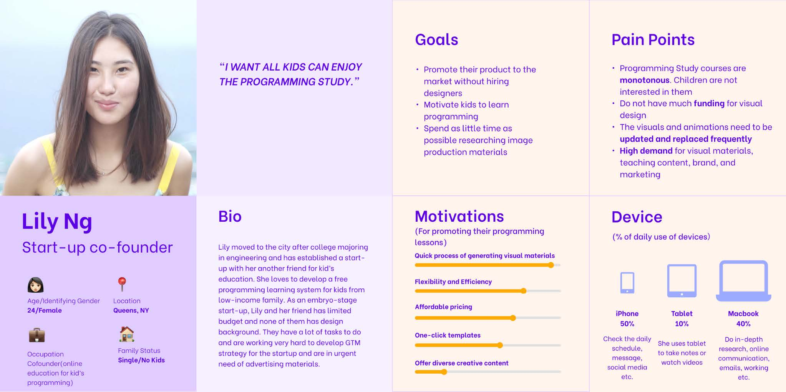
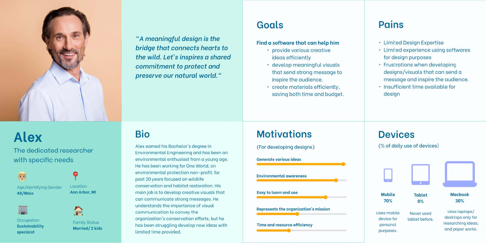
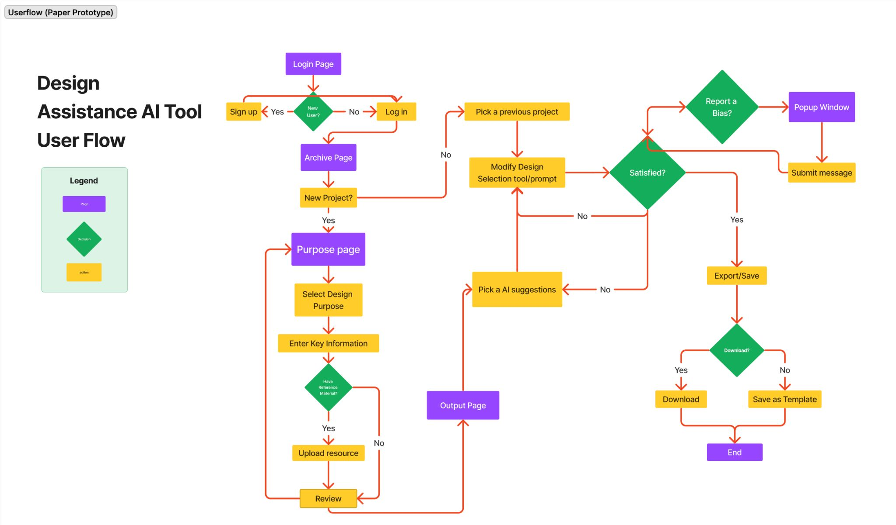
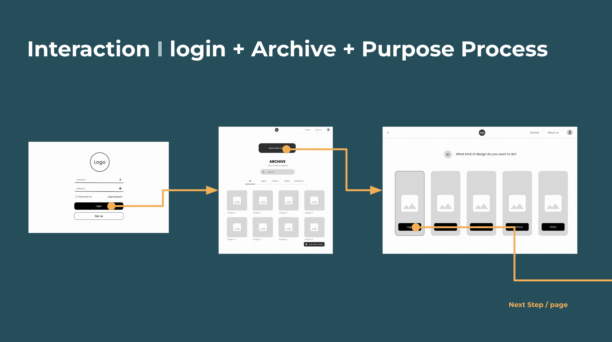
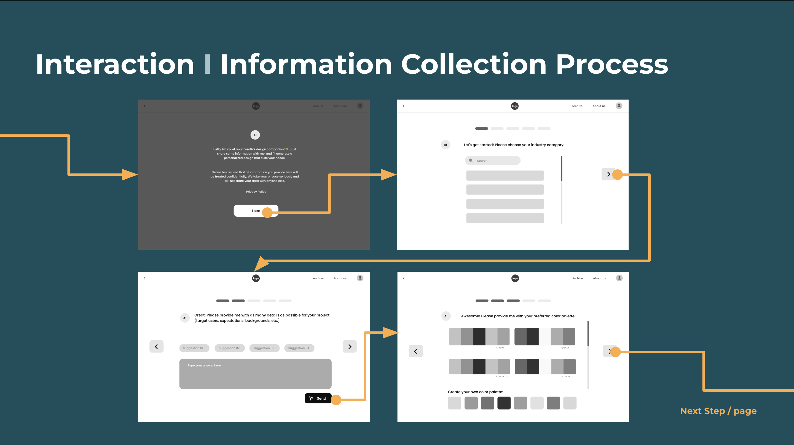
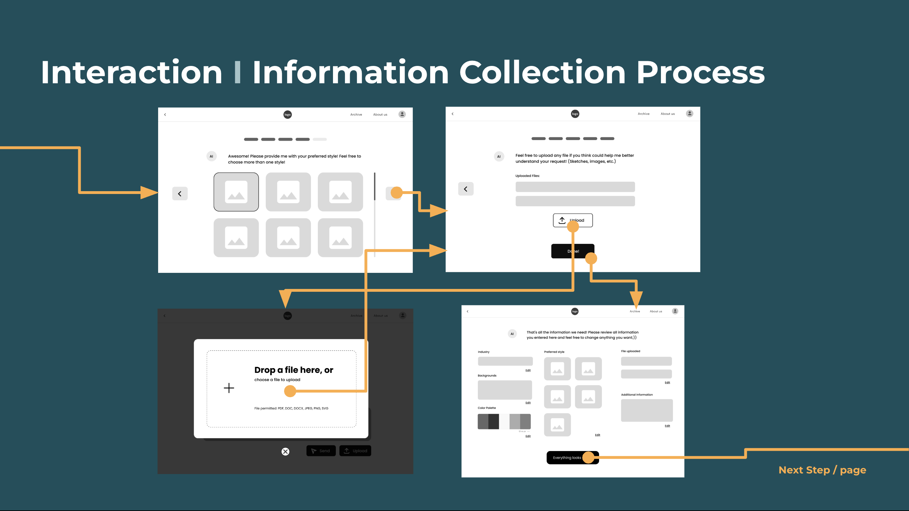
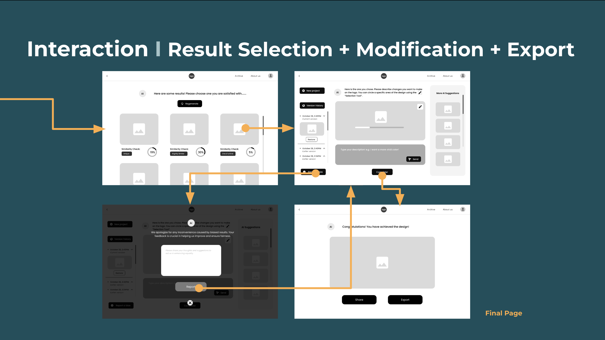
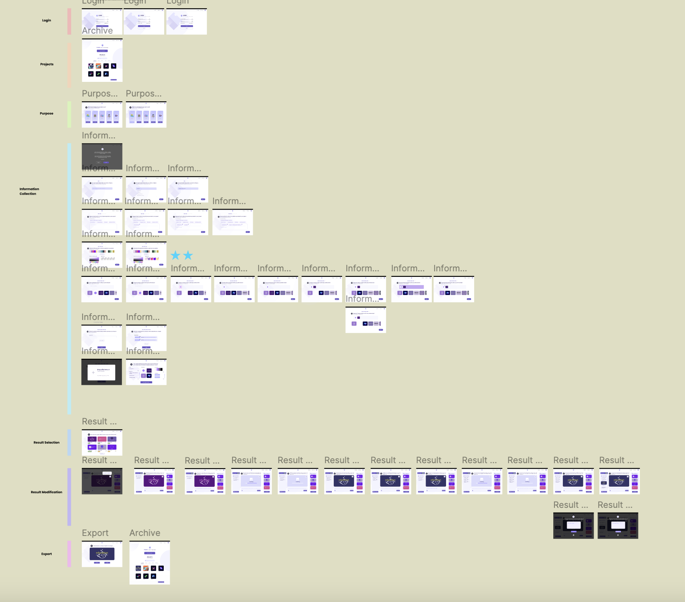
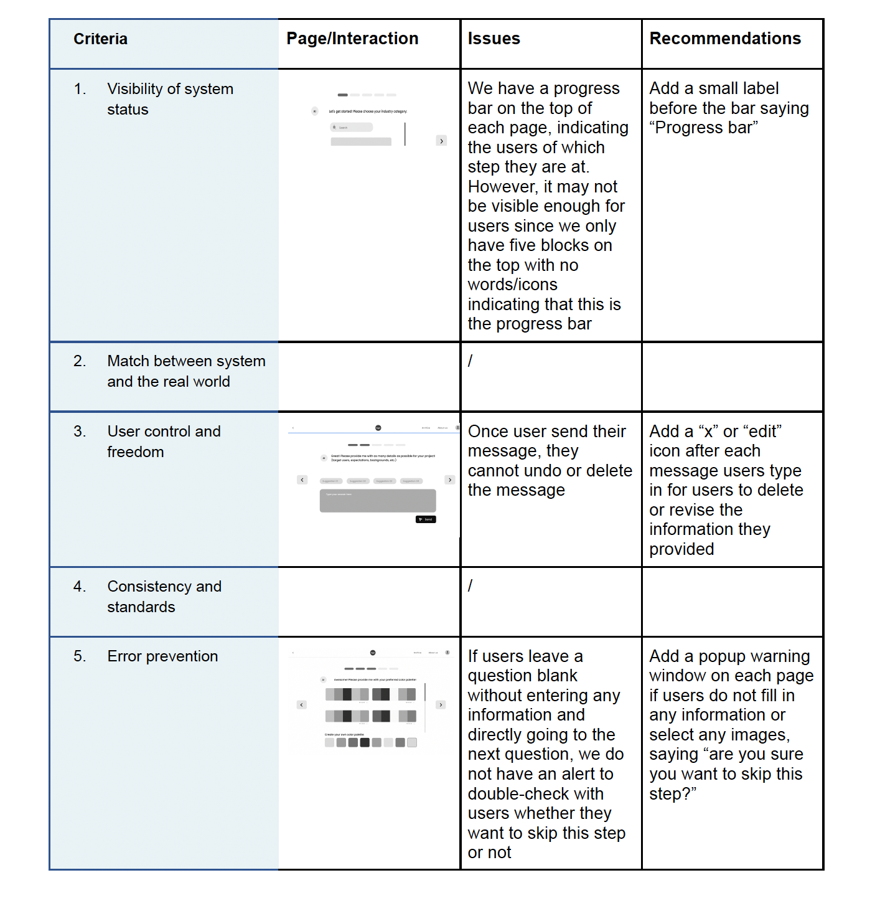
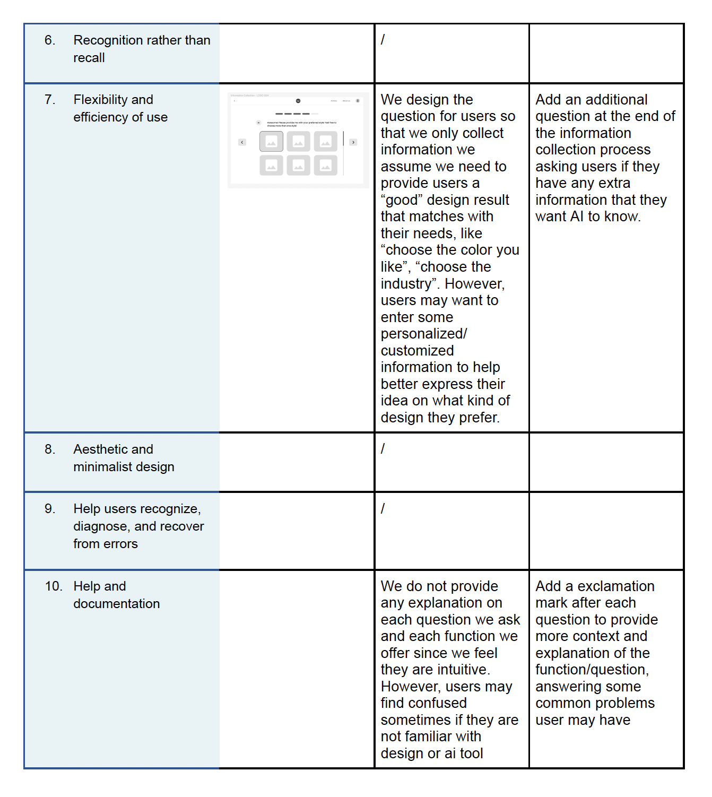

Year: 2023 | Type:Team project | Role: Designer | Tool: Figma
Problem Statement
Despite the potential benefits of traditional design tools and existing generative AI tools, their steep learning curves and various usage barriers pose accessibility issues for non-designers in professional settings. This generates an unmet need for more user-friendly design tools within the nonprofit and small business sector, where access to design resources is often limited. Consequently, we propose “How might we create an affordable, user-friendly AI-powered design tool that enables nonprofits and small businesses with limited resources to expedite and enhance their design capabilities effectively?
Target Audience
In terms of stakeholders, although our target group includes design enthusiasts, non-designers are the demographic we mainly want to reach: small businesses and startups with limited budgets, design-related educational institutions, and even elderly and technologically challenged users. All of these user groups are in need of design assistance. We hope that our creation can lower the barriers of the design field and improve digital literacy as a learning tool.
Solution Overview
With two core functions, Information Collection and Result Modification, our design tool solves two pain points for non-designers in nonprofit and startup settings.
1. Information Collection allows users to input materials, color preferences, style, and keywords to generate related images. By breaking down the traditional prompt engineering process into questionnaire-style interactions, users can answer questions related to different aspects of designs instead of entering a long prompt. This approach could lower the barrier of generative AI tools, such as the difficulty of describing images with art jargon in prompts.
2. Result Modification allows users to use a combination of a selection tool and keywords for minor tweaks. Compared to traditional design tools such as Adobe, with which users have to create layers for modification, our tool integrates such direct modification features to better suit business needs. Consequently, users do not have to process images back-and-forth in different softwares to achieve final results.
Outcome
Process
User Interview
We conducted six user interviews with participants of diverse backgrounds, ranging from non-design professionals to individuals with basic design experience, to understand their challenges and expectations when using digital design tools. Participants described difficulties in ideation, limited onboarding support, and a strong need for flexibility and diverse functionalities. Many struggled with generating fresh ideas, locating features, and adapting tools like Canva for complex tasks.
Competitive Analysis
We conducted a competitive analysis of four AI-powered tools, Midjourney, Canva, Uizard, and GitHub Copilot, to understand how existing platforms support creativity, flexibility, and collaboration in design. Midjourney excels at rapid ideation and generating unique visual concepts but lacks control and precision; Canva offers accessibility and collaboration but is limited by low-quality templates and unclear onboarding; Uizard supports rapid prototyping and real-time collaboration yet poses a learning curve and pricing concerns; and GitHub Copilot demonstrates valuable AI-assisted workflow ideas applicable to design, though it risks over-reliance and privacy issues. From these insights, we concluded that our proposed AI design tool should balance creative idea generation with customization flexibility, incorporate clear in-app tutorials, and support iterative, user-driven design processes that empower non-designers to create effectively.
Persona
Based on the interviews we conducted earlier, we were finally able to identify two distinct types of user needs. The first one revolves around efficiency in the design process, while the second is essentially about ideation and creating an easy onboarding experience. We recognized that there were still noticeable differences among individuals within these groups. For instance, Lily aims to generate usable content quickly, even without switching between different software tools. In her case, having both background image and typography readily available within one tool would be ideal.
In contrast, Alex seeks to generate diverse ideas that emphasize visual communication to encourage the audience on environmental awareness. However, he lacks the time to learn essential design tools and doesn't feel confident in expressing his ideas through them. For him, the ideal design tool should address both the need for inspiration and overcoming the challenges of expression.


User Flow Diagram

Paper Prototype
We conducted a paper prototype testing with four participants to evaluate the information collection and modification processes of our AI design tool prototype. While participants found the overall interface intuitive, they encountered several usability issues, including unclear input fields, confusing upload features, and a lack of guidance for complex design terminology. On the result/edit page, users reported information overload, unclear icon meanings, copyright concerns, confusion about the AI suggestion section, and the absence of an undo option. To address these problems, we proposed design improvements such as adding example prompts, tooltips, tutorials, a version history, and multiple-choice logo results with similarity checks.
Wireframe





High Fidelity

Heuristic Evaluation & Usability Tests
We conducted heuristic evaluations and 6 usability tests to further identify design issues. Participants commonly found the button functions confusing, the wording unclear, and important features like “Skip” or “Confirmation” either missing or hidden. Users also expressed uncertainty about system capabilities, such as file uploads, color customization, and AI suggestions. To address these issues, the team proposed improving label clarity, adding tooltips and question marks for unclear terms, ensuring consistent button placement and visibility, and implementing real-time AI feedback that adapts to user input. These refinements aim to create a more intuitive, consistent, and responsive user experience across the platform




Impact & Future Improvements
Our design tool can potentially democratize generative design by making it accessible for a broader audience, leading to diverse designs and improved digital literacy. It enables underserved communities, such as nonprofits and small businesses, to access high-quality design resources that could elevate their work and help them stand out in a competitive market. Compared to traditional prompting, the “human-AI interaction” that the present tool facilitates also allows users without art domain knowledge to express their ideas easily, enhancing communication and collaboration in professional settings.
However, potential negatives should also be taken into consideration. First, we must avoid oversimplification leading to homogenizing outputs; the tool must balance simplicity with personalized design. Secondly, misuse is a concern; preventative measures and guidelines against inappropriate use are necessary. Lastly, ethical issues around AI use should be monitored. Mitigation of AI bias is also important; our "Report a Bias" feature helps combat this.
Future efforts could involve conducting additional usability tests with a larger sample size to better understand user needs.